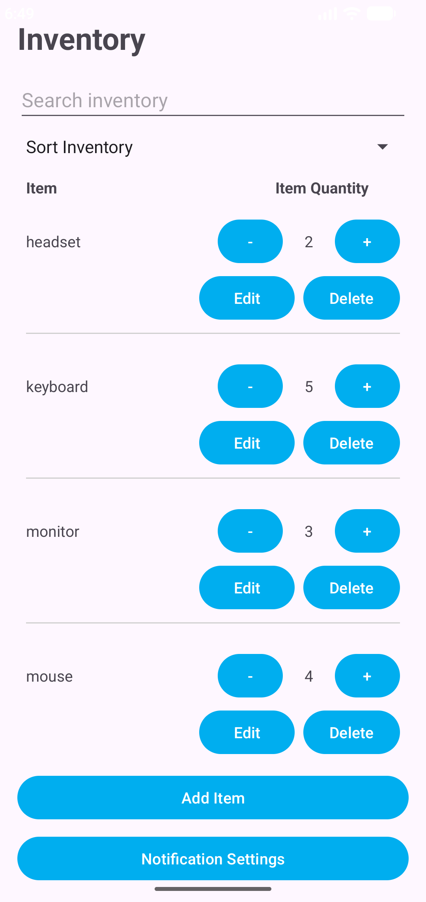
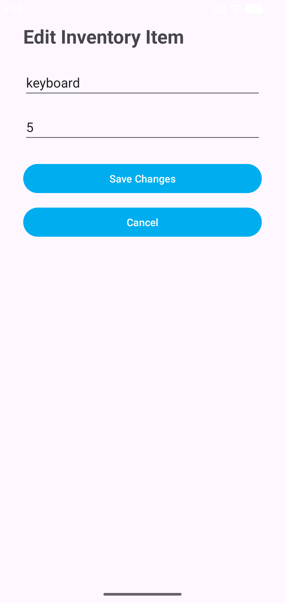
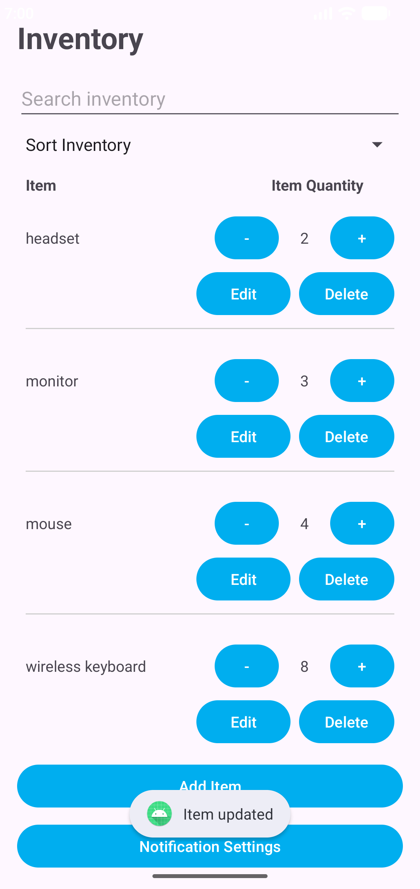

Artifact Overview
The artifact selected for the Software Design and Engineering category is an Android inventory management application originally developed in CS 360: Mobile Architecture and Programming at Southern New Hampshire University.
The application was developed in Java using Android Studio and uses SQLite for local data storage. It allows users to create an account, log in, add and remove inventory items, adjust item quantities, and optionally receive an SMS notification when an item's quantity reaches zero.
I selected this artifact because it demonstrates software design and engineering across a complete mobile application. The project incorporates Java, Android user-interface components, object-oriented programming, event-driven behavior, RecyclerView, multiple activities, and SQLite database operations.
Enhancement
The primary enhancement was the addition of functionality for editing an existing inventory item. Users can select an item, open an Edit Item screen populated with the item's current name and quantity, modify those values, and save the changes.
The application validates the entered values and updates the existing SQLite record using its unique ID. When the user returns to the inventory screen, the stored records are reloaded so the updated information is immediately displayed.
I also redesigned the inventory-row layout to accommodate the new Edit action without sacrificing readability. Item information and quantity controls were separated from the Edit and Delete actions, and visual separation was added between inventory records.
Although editing an inventory item appears to be a relatively small user-facing feature, implementing it required coordinated changes across the user interface, application logic, data model, and persistence layer.
Skills Demonstrated
Java & Android
Extended an existing Java-based Android application while preserving its established functionality.
Application Design
Coordinated changes across activities, intents, application logic, and user-interface components.
SQLite
Updated existing inventory records using unique IDs and reloaded stored data after editing.
User Interface Design
Redesigned inventory rows to support additional actions while maintaining readability and usability.
Input Validation
Validated edited inventory values before committing changes to persistent storage.
Testing
Used incremental testing throughout development to verify the enhancement without disrupting existing inventory functionality.
Course Outcomes
Course Outcome 1
The enhancement supports Course Outcome 1 by improving the accuracy and maintainability of inventory information. Allowing existing records to be edited provides users with more reliable information that can support inventory-related decisions.
Course Outcome 2
Course Outcome 2 is demonstrated through the clear editing workflow, user-interface changes, validation messages, and visual organization of inventory records. These changes improve how information and application functionality are presented to the user.
Course Outcome 4
Course Outcome 4 is demonstrated through the use of Java, Android Studio, Android activities and intents, RecyclerView, and SQLite to extend a working software solution with additional functionality that provides value to the user.
Development Reflection
Completing the enhancement strengthened my understanding of how different layers of an application work together. The selected inventory record had to be identified, its existing values passed to the Edit Item activity, the user's changes validated, and the correct SQLite record updated. The inventory screen then had to reload the stored data when the user returned.
One of the primary challenges was incorporating the Edit action without making the existing inventory rows difficult to read. Adding another button reduced the space available for longer item names, which required reorganizing the layout and adding clearer visual separation between records.
I used incremental testing while implementing changes to the model, database logic, editing activity, and interface. This helped confirm that the new functionality worked correctly while the application's existing inventory features continued to function as intended.
Artifact Materials
The following materials document the completed Software Design and Engineering enhancement.
Application Screenshots
The screenshots below demonstrate the completed inventory editing workflow, from selecting an existing inventory record to saving and displaying the updated information.


